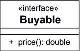
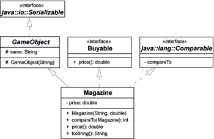
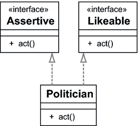

5.13 Schnittstellen
Da Java nur Einfachvererbung kennt, ist es schwierig, Klassen mehrere Typen zu geben. Das kann immer nur in einer Reihe geschehen, also etwa so: GameObject erbt von Object, Building erbt von GameObject, Castle erbt von Building usw. Es wird schwierig, an einer Stelle zu sagen, dass ein Building ein GameObject ist, aber zum Beispiel noch zusätzlich einen Typ Preis haben soll, was nur nicht gleich alle Spielobjekte haben sollen. Denn soll eine Klasse auf einer Ebene von mehreren Typen erben, geht das durch die Einfachvererbung nicht. Da es aber möglich sein soll, dass in der objektorientierten Modellierung eine Klasse mehrere Typen in einem Schritt besitzt, gibt es das Konzept der Schnittstelle (engl. interface). Eine Klasse kann dann neben der Oberklasse eine beliebige Anzahl Schnittstellen implementieren und auf diese Weise weitere Typen sammeln.
| OOP-Design |
|
Schnittstellen sind eine gute Ergänzung zu abstrakten Klassen/Methoden. Denn im objektorientierten Design wollen wir das Was vom Wie trennen. Abstrakte Methoden sagen wie Schnittstellen etwas über das Was aus, aber erst die konkreten Implementierungen realisieren das Wie. |
5.13.1 Schnittstellen deklarieren
Eine Schnittstelle enthält keine Implementierungen, sondern deklariert nur den Kopf einer Methode – also Modifizierer, den Rückgabetyp und die Signatur – ohne Rumpf.
Abbildung 5.29: UML-Diagramm der Schnittstelle Buyable
Sollen in einem Spiel gewisse Dinge käuflich sein, haben sie einen Preis. Eine Schnittstelle Buyable soll allen Klassen die Methode price() vorschreiben.
Listing 5.93: com/tutego/insel/game/vk/Buyable.java, Buyable
interface Buyable
{
double price();
}
Die Deklaration einer Schnittstelle erinnert an eine abstrakte Klasse mit abstrakten Methoden, nur steht anstelle von class das Schlüsselwort interface. Da alle Methoden in Schnittstellen automatisch abstrakt und öffentlich sind, akzeptiert der Compiler das redundante abstract und public, doch die Modifizierer sollten nicht geschrieben werden. Die von den Schnittstellen deklarierten Operationen sind – wie auch bei abstrakten Methoden – mit einem Semikolon abgeschlossen und haben niemals eine Implementierung.
Eine Schnittstelle darf keinen Konstruktor deklarieren. Das ist auch klar, da Exemplare von Schnittstellen nicht erzeugt werden können, sondern nur von den konkreten implementierenden Klassen.
| Hinweis |
|
Der Name einer Schnittstelle endet oft auf -ble (Accessible, Adjustable, Runnable). Er beginnt üblicherweise nicht mit einem Präfix wie »I«, obwohl die Eclipse-Entwickler diese Namenskonvention nutzen. |
Obwohl in einer Schnittstelle keine Methoden ausprogrammiert werden und keine Objektvariablen deklariert werden dürfen, sind static final-Variablen (benannte Konstanten) in einer Schnittstelle erlaubt, statische Methoden jedoch nicht.

Existiert eine Klasse, in der Methoden in einer neuen Schnittstelle deklariert werden
sollen, lässt sich Refactor • Extract Interface... einsetzen. Es folgt ein Dialog, der uns Methoden auswählen lässt, die später in
der neuen Schnittstelle deklariert werden. Eclipse legt die Schnittstelle automatisch
an und lässt die Klasse die Schnittstelle implementieren. Dort, wo es möglich ist,
erlaubt Eclipse, dass die konkrete Klasse durch die Schnittstelle ersetzt wird.
5.13.2 Implementieren von Schnittstellen
Möchte eine Klasse eine Schnittstelle verwenden, so folgt hinter dem Klassennamen das Schlüsselwort implements und dann der Name der Schnittstelle. Die Ausdrucksweise ist dann: »Klassen werden vererbt und Schnittstellen implementiert.«
Für unsere Spielwelt sollen die Klassen Chocolate und Magazine die Schnittstelle Buyable implementieren. Eine Schokolade soll dabei immer einen sozialistischen Einheitspreis von 0,69 haben.
Listing 5.94: com/tutego/insel/game/vk/Chocolate.java, Chocolate
public class Chocolate implements Buyable
{
@Override public double price()
{
return 0.69;
}
}
Abbildung 5.30: Die Klassen Magazine und Chocolate implementieren Buyable
Die Annotation @Override zeigt wieder eine überschriebene Methode (hier implementierte Methode einer Schnittstelle) an. Unter Java 5 führte @Override an implementierten Methoden einer Schnittstelle noch zu einem Compilerfehler.
Während Chocolate nur die Schnittstelle Buyable implementiert, soll Magazine zusätzlich ein GameObject sein:
Listing 5.95: com/tutego/insel/game/vk/Magazine.java, Magazine
public class Magazine extends GameObject implements Buyable
{
double price;
@Override public double price()
{
return price;
}
}
Es ist also kein Problem – und bei uns so gewünscht –, wenn eine Klasse eine andere Klasse erweitert und zusätzlich Operationen aus Schnittstellen implementiert.
| Hinweis |
|
Da die in Schnittstellen deklarierten Operationen immer public sind, müssen auch die implementierten Methoden in den Klassen immer öffentlich sein. Sollte diese Vorgabe wirklich lästig sein, lässt sich immer noch eine abstrakte Klasse mit einer abstrakten Methode eingeschränkter Sichtbarkeit deklarieren. Dann gibt es aber auch nur einmal eine Vererbung. |
Implementiert eine Klasse nicht alle Operationen aus den Schnittstellen, so erbt sie damit abstrakte Methoden und muss selbst wieder als abstrakt gekennzeichnet werden.
| Tipp |
|
Schnittstellen später zu ändern, wenn schon viele Klassen die Schnittstelle implementieren, ist eine schlechte Idee. Denn erneuert sich die Schnittstelle, etwa wenn nur eine Operation hinzukommt oder sich ein Variablentyp ändert, dann sind plötzlich alle implementierenden Klassen kaputt. Sun selbst hat diesen Fehler bei der Schnittstelle java.sql.Connection gemacht. Beim Übergang von Java 5 auf Java 6 wurde die Schnittstelle erweitert, und keine Treiberimplementierungen konnten mehr compiliert werden. Die übliche Lösung für das Problem ist, eine neue Schnittstelle mit weiteren Operationen einzuführen, die die alte Schnittstelle erweitert, aber auf 2 endet. java.awt.LayoutManager2 ist so ein Beispiel aus dem Bereich der grafischen Oberflächen, Attributes2, EntityResolver2, Locator2 für XML-Verarbeitung sind weitere. |
Eclipse zeigt bei der Tastenkombination  + eine Typhierarchie an, Oberklassen stehen oben und Unterklassen unten. Wird in dieser
Ansicht erneut + gedrückt, wird die Ansicht umgedreht, dann stehen die Obertypen unten, was den Vorteil
hat, dass auch die implementierte Schnittstelle unter den Obertypen ist.
+ eine Typhierarchie an, Oberklassen stehen oben und Unterklassen unten. Wird in dieser
Ansicht erneut + gedrückt, wird die Ansicht umgedreht, dann stehen die Obertypen unten, was den Vorteil
hat, dass auch die implementierte Schnittstelle unter den Obertypen ist.
5.13.3 Markierungsschnittstellen *
Auch Schnittstellen ohne Methoden sind möglich. Diese leeren Schnittstellen werden Markierungsschnittstellen (engl. marker interfaces) genannt. Sie sind nützlich, da mit instanceof leicht überprüft werden kann, ob sie einen gewollten Typ einnehmen.
Die Java-Bibliothek bringt einige Markierungsschnittstellen schon mit, etwa:
- java.util.RandomAccess: Eine Datenstruktur bietet schnellen Zugriff über einen Index.
- java.rmi.Remote: Identifiziert Schnittstellen, deren Operationen von außen aufgerufen werden können.
- java.lang.Cloneable: Sorgt dafür, dass die clone()-Methode von Object aufgerufen werden kann.
- java.util.EventListener: Typ, den jeder Horcher in der Java SE implementiert.
- java.io.Serializable: Zustände eines Objekts lassen sich in einen Datenstrom schreiben – mehr dazu folgt in Kapitel 15, »Einführung in Dateien und Datenströme«.
| Hinweis |
|
Seit es das Sprachmittel der Annotationen gibt, sind Markierungsschnittstellen bei neuen Bibliotheken nicht mehr anzutreffen. |
5.13.4 Ein Polymorphie-Beispiel mit Schnittstellen
Obwohl Schnittstellen auf den ersten Blick nichts »bringen« – Programmierer wollen gerne etwas vererbt bekommen, damit sie Implementierungsarbeit sparen können –, sind sie eine enorm wichtige Erfindung, da sich über Schnittstellen ganz unterschiedliche Sichten auf ein Objekt beschreiben lassen. Jede Schnittstelle ermöglicht eine neue Sicht auf das Objekt, eine Art Rolle. Implementiert eine Klasse diverse Schnittstellen, können ihre Exemplare in verschiedenen Rollen auftreten. Hier wird erneut das Substitutionsprinzip wichtig, bei dem ein mächtigeres Objekt verwendet wird, obwohl je nach Kontext nur die Methode der Schnittstellen erwartet wird.
Mit Magazine und Chocolate haben wir zwei Klassen, die Buyable implementieren. Damit existieren zwei Klassen, die einen gemeinsamen Typ und beide eine gemeinsame Methode price() besitzen.
Buyable b1 = new Magazine();
Buyable b2 = new Chocolate();
System.out.println( b1.price() );
System.out.println( b2.price() );
Für Buyable wollen wir eine statische Methode calculateSum() schreiben, die den Preis einer Sammlung zum Verkauf stehender Objekte berechnet. Sie soll wie folgt aufgerufen werden:
Listing 5.96: com/tutego/insel/game/vk/Playground.java, main()
Magazine madMag = new Magazine();
madMag.price = 2.50;
Buyable schoki = new Chocolate();
Magazine maxim = new Magazine();
maxim.price = 3.00;
System.out.printf( "%.2f", PriceUtils.calculateSum( madMag, maxim, schoki ) ); // 6,19
Damit calculateSum() eine beliebige Anzahl Argumente, aber mindestens eins, annehmen kann, realisieren wir die Methode mit einem Vararg:
Listing 5.97: com/tutego/insel/game/vk/PriceUtils.java, calculateSum()
static double calculateSum( Buyable price1, Buyable... prices )
{
double result = price1.price();
for ( Buyable price : prices )
result += price.price();
return result;
}
Die Methode nimmt käufliche Dinge an, wobei es ihr völlig egal ist, um welche es sich dabei handelt. Was zählt, ist die Tatsache, dass die Elemente die Schnittstelle Buyable implementieren.
Die dynamische Bindung tritt schon in der ersten Anweisung price1.price() auf. Auch später rufen wir auf jedem Objekt, das Buyable implementiert, die Methode price() auf. Indem wir die unterschiedlichen Werte summieren, bekommen wir den Gesamtpreis der Elemente aus der Parameterliste.
Im Zusammenhang mit Schnittstellen bleibt zusammenfassend zu sagen, dass hier bei Methodenaufrufen dynamisches Binden pur auftaucht.
5.13.5 Die Mehrfachvererbung bei Schnittstellen *
Bei Klassen gibt es die Einschränkung, dass nur von einer direkten Oberklasse abgeleitet werden darf – egal, ob sie abstrakt ist oder nicht. Der Grund ist, dass Mehrfachvererbung zu dem Problem führen kann, dass eine Klasse von zwei Oberklassen die gleiche Methode erbt und dann nicht weiß, welche sie aufnehmen soll. Ohne Schwierigkeiten kann eine Klasse jedoch mehrere Schnittstellen implementieren. Das liegt daran, dass von einer Schnittstelle kein Code kommt, sondern nur eine Vorschrift zur Implementierung – im schlimmsten Fall gibt es die Vorschrift, eine Operation umzusetzen, mehrfach.
Dass in Java eine Klasse mehrere Schnittstellen implementieren kann, wird gelegentlich als Mehrfachvererbung in Java bezeichnet. Auf diese Weise besitzt die Klasse ganz unterschiedliche Typen. Ist U eine solche Klasse mit der Oberklasse O und implementiert sie die Schnittstellen I1 und I2, so liefert für ein Exemplar o vom Typ O der Test o instanceof O ein wahres Ergebnis genauso wie o instanceof I1 und o instanceof I1.
| Begrifflichkeit |
|
Wenn es um das Thema Mehrfachvererbung geht, dann müssen wir Folgendes unterscheiden: Geht es um Klassenvererbung, sogenannte Implementierungsvererbung, ist Mehrfachvererbung nicht erlaubt. Geht es dagegen um Schnittstellenvererbung, so ist in dem Sinne Mehrfachvererbung erlaubt, denn eine Klasse kann beliebig viele Schnittstellen implementieren. Typ-Vererbung ist hier ein gebräuchliches Wort. Üblicherweise wird der Begriff Mehrfachvererbung in Java nicht verwendet, da er sich traditionell auf Klassenvererbung bezieht. |
Beginnen wir mit einem Beispiel. GameObject soll die Markierungsschnittstelle Serializable implementieren, sodass dann alle Unterklassen von GameObject ebenfalls vom Typ Serializable sind. Die Markierungsschnittstelle schreibt nichts vor, daher gibt es keine spezielle überschriebene Methode:
Listing 5.98: com/tutego/insel/game/vl/GameObject.java, GameObject
public abstract class GameObject implements Serializable
{
protected String name;
protected GameObject( String name )
{
this.name = name;
}
}
Damit gibt es schon verschiedene Ist-eine-Art-von-Beziehungen: GameObject ist ein java.lang.Object, GameObject ist ein GameObject, GameObject ist Serializable.
Ein Magazine soll zunächst ein GameObject sein. Dann soll es nicht nur die Schnittstelle Buyable und damit die Methode price()implementieren, sondern sich auch mit anderen Magazinen vergleichen lassen. Dazu gibt es schon eine passende Schnittstelle in der Java-Bibliothek: java.lang.Comparable. Die Schnittstelle Comparable fordert, dass unser Magazin die Methode int compareTo(Magazine) implementiert. Der Rückgabewert der Methode zeigt an, wie das eigene Magazin zum anderen aufgestellt ist. Wir wollen definieren, dass das günstigere Magazin vor einem teureren steht (eigentlich sollten mit Comparable auch equals() und hashCode() aus Object überschrieben werden, doch das spart das Beispiel aus[146](Wenn compareTo() bei zwei gleichen Objekten 0 ergibt, so sollte equals() auch true liefern. Doch wird equals() nicht überschrieben, so führt die in Object implementierte Methode nur einen Referenzvergleich durch. Bei zwei im Prinzip gleichen Objekten würde die equals()-Standardimplementierung also false liefern. Bei hashCode() gilt das Gleiche: Zwei gleiche Objekte müssen auch den gleichen Hashwert haben. Ohne Überschreiben der Methode ist das jedoch nicht gegeben; nur zwei identische Objekte haben den gleichen Hashcode.)):
Listing 5.99: com/tutego/insel/game/vl/Buyable.java, Buyable
interface Buyable
{
double price();
}
Listing 5.100: com/tutego/insel/game/vl/Magazine.java, Magazine
public class Magazine extends GameObject implements Buyable, Comparable<Magazine>
{
private double price;
public Magazine( String name, double price )
{
super( name );
this.price = price;
}
@Override public double price()
{
return price;
}
@Override public int compareTo( Magazine that )
{
return Double.compare( this.price(), that.price() );
}
@Override public String toString()
{
return name + " " + price;
}
}
Die Implementierung nutzt Generics mit Comparable<Magazine>, was wir genauer erst später lernen, aber an der Stelle schon einmal nutzen wollen. Der Hintergrund ist, dass Comparable dann genau weiß, mit welchem anderen Typ der Vergleich stattfinden soll.
Abbildung 5.31: Die Klasse Magazine mit diversen Obertypen
Durch diese »Mehrfachvererbung« bekommt Magazine mehrere Typen, sodass sich je nach Sichtweise Folgendes schreiben lässt:
Magazine m1 = new Magazine( "Mad Magazine", 2.50 );
GameObject m2 = new Magazine( "Mad Magazine", 2.50 );
Object m3 = new Magazine( "Mad Magazine", 2.50 );
Buyable m4 = new Magazine( "Mad Magazine", 2.50 );
Comparable<Magazine> m5 = new Magazine( "Mad Magazine", 2.50 );
Serializable m6 = new Magazine( "Mad Magazine", 2.50 );
Die Konsequenzen davon sind:
- Im Fall m1 sind alle Methoden der Schnittstellen verfügbar, also price() und compareTo() sowie das Attribut name.
- Über m2 ist keine Schnittstellenmethode verfügbar, und nur die geschützte Variable name ist vorhanden.
- Mit m3 sind alle Bezüge zu Spielobjekten verloren. Aber ein Magazine als Object ist ein gültiger Argumenttyp für System.out.println(Object).
- Die Variable m4 ist vom Typ Buyable, sodass es price() gibt, jedoch kein compareTo(). Das Objekt könnte daher in PriceUtils.calculateSum() eingesetzt werden.
- Mit m5 gibt es ein compareTo(), aber keinen Preis.
- Da Magazine die Klasse GameObject erweitert und darüber auch vom Typ Serializable ist, lässt sich keine besondere Methode aufrufen – Serializable ist eine Markierungsschnittstelle ohne Operationen. Damit könnte das Objekt allerdings von speziellen Klassen der Java-Bibliothek serialisiert und so persistent gemacht werden.
Ein kleines Beispiel zeigt abschließend die Anwendung der Methoden compareTo() der Schnittstelle Comparable und price() der Schnittstelle Buyable:
Listing 5.101: com/tutego/insel/game/vl/Playground.java, main() – Teil 1
Magazine spiegel = new Magazine( "Spiegel", 3.50 );
Magazine madMag = new Magazine( "Mad Magazine", 2.50 );
Magazine maxim = new Magazine( "Maxim", 3.00 );
Magazine neon = new Magazine( "Neon", 3.00 );
Magazine ct = new Magazine( "c't", 3.30 );
Da wir einem Magazin so viele Sichten gegeben haben, können wir es natürlich mit unserer früheren Methode calculateSum() aufrufen, da jedes Magazine ja Buyable ist:
Listing 5.102: com/tutego/insel/game/vl/Playground.java, main() – Teil 2
System.out.println( PriceUtils.calculateSum( spiegel, madMag, ct ) ); // 9.3
Und die Magazine können wir vergleichen:
Listing 5.103: com/tutego/insel/game/vl/Playground.java, main() – Teil 3
System.out.println( spiegel.compareTo( ct ) ); // 1
System.out.println( ct.compareTo( spiegel ) ); // –1
System.out.println( maxim.compareTo( neon ) ); // 0
So wie es der Methode calculateSum() egal ist, was für Buyable-Objekte konkret übergeben werden, so gibt es auch für Comparable einen sehr nützlichen Anwendungsfall: das Sortieren. Einem Sortierverfahren ist es egal, was für Objekte genau es sortiert, solange die Objekte sagen, ob sie vor oder hinter einem anderen Objekt liegen:
Listing 5.104: com/tutego/insel/game/vl/Playground.java, main() – Teil 4
Magazine[] mags = { spiegel, madMag, maxim, neon, ct };
Arrays.sort( mags );
System.out.println( Arrays.toString( mags ) );
// [Mad Magazine 2.5, Maxim 3.0, Neon 3.0, c't 3.3, Spiegel 3.5]
Die statische Methode Arrays.sort() erwartet ein Feld, dessen Elemente Comparable sind. Der Sortieralgorithmus macht Vergleiche über compareTo(), muss aber sonst über die Objekte nichts wissen. Unsere Magazine mit den unterschiedlichen Typen können also sehr flexibel in unterschiedlichen Kontexten eingesetzt werden. Es muss somit für das Sortieren keine Spezialsortiermethode geschrieben werden, die nur Magazine sortieren kann, oder eine Methode zur Berechnung einer Summe, die nur auf Magazinen arbeitet. Wir modellieren die unterschiedlichen Anwendungsszenarien mit jeweils unterschiedlichen Schnittstellen, die Unterschiedliches von dem Objekt erwarten.
5.13.6 Keine Kollisionsgefahr bei Mehrfachvererbung *
Bei der Mehrfachvererbung von Klassen besteht die Gefahr, dass zwei Oberklassen die gleiche Methode mit zwei unterschiedlichen Implementierungen den Unterklassen vererben. Die Unterklasse wüsste dann nicht, welche Logik sie erbt. Bei den Schnittstellen gibt es das Problem nicht, denn auch wenn zwei implementierende Schnittstellen die gleiche Methode vorschreiben würden, gäbe es keine zwei verschiedenen Implementierungen von Anwendungslogik. Die implementierende Klasse bekommt sozusagen zweimal die Aufforderung, die Operation zu implementieren. So wie bei folgendem Beispiel: Ein Politiker muss verschiedene Dinge vereinen; er muss sympathisch sein, aber auch durchsetzungsfähig handeln können.
Listing 5.105: Politician.java
interface Likeable
{
void act();
}
interface Assertive
{
void act();
}
public class Politician implements Likeable, Assertive
{
@Override public void act()
{
// Implementation
}
}
Zwei Schnittstellen schreiben die gleiche Operation vor. Eine Klasse implementiert diese beiden Schnittstellen und muss beiden Vorgaben gerecht werden.
Abbildung 5.32: Eine Klasse erbt von zwei Schnittstellen die gleiche Operation.
5.13.7 Erweitern von Interfaces – Subinterfaces
Ein Subinterface ist die Erweiterung eines anderen Interfaces. Diese Erweiterung erfolgt – wie bei der Vererbung – durch das Schlüsselwort extends.
interface Disgusting
{
double disgustingValue();
}
interface Stinky extends Disgusting
{
double olf();
}
Die Schnittstelle modelliert Stinkiges, was besonders abstoßend ist. Zusätzlich soll die Stinkquelle die Stärke der Stinkigkeit in der Einheit Olf angeben. Eine Klasse, die nun Stinky implementiert, muss die Methoden aus beiden Schnittstellen implementieren, demnach die Methode disgustingValue() aus Disgusting sowie die Operation olf(), die in Stinky selbst angegeben wurde. Ohne die Implementierung beider Methoden wird eine implementierende Klasse abstrakt sein müssen.
| Hinweis |
|
Eine interessante Änderung an der API gab es in Java 5 mit dem Einsatz von Iterable. Die Schnittstelle Collection erweitert seit Java 5 die Schnittstelle Iterable. Nun ist es immer so, dass nachträgliche neue Schnittstellen neue Methoden erzwingen und alle alten Implementierungen ungültig machen können. In diesem Fall war das aber kein Problem, da Iterable die Operation iterator() vorschreibt, die Collection sowieso schon deklarierte. Hätte Iterable eine neue Operation eingeführt, hätte das zu einem großen Bruch existierender Programme geführt. |
5.13.8 Konstantendeklarationen bei Schnittstellen
Schnittstellen können Attribute besitzen, die jedoch immer automatisch statisch und final, also Konstanten sind.
| Beispiele |
|
Die Schnittstelle Buyable soll eine Konstante für einen Maximalpreis deklarieren: interface Buyable |
| Tipp |
|
Da alle Attribute einer Schnittstelle immer implizit public static final sind, ergibt sich ein Problem, wenn das Attribut ein veränderbares Objekt repräsentiert, wie in folgendem Beispiel ein StringBuilder-Objekt: interface Vulcano |
Vererbung und Überschattung von statischen Variablen *
Die Konstanten einer Schnittstelle können einer anderen Schnittstelle vererbt werden. Dabei gibt es einige kleine Einschränkungen. Wir wollen an einem Beispiel sehen, wie sich die Vererbung auswirkt, wenn gleiche Bezeichner in den Unterschnittstellen erneut verwendet werden:
Listing 5.106: Colors.java
interface BaseColors
{
int RED = 1;
int GREEN = 2;
int BLUE = 3;
}
interface CarColors extends BaseColors
{
int BLACK = 10;
int PURPLE = 11;
}
interface CoveringColors extends BaseColors
{
int PURPLE = 11;
int BLACK = 20;
int WHITE = 21;
}
interface AllColors extends CarColors, CoveringColors
{
int WHITE = 30;
}
public class Colors
{
@SuppressWarnings("all")
public static void main( String[] args )
{
System.out.println( CarColors.RED ); // 1
System.out.println( AllColors.RED ); // 1
System.out.println( CarColors.BLACK ); // 10
System.out.println( CoveringColors.BLACK ); // 20
System.out.println( AllColors.BLACK ); //The field AllColors.BLACK is ambiguous
System.out.println( AllColors.PURPLE ); //
}
}
Die erste wichtige Tatsache ist, dass Schnittstellen ohne Fehler übersetzt werden können. Doch das Programm zeigt weitere Eigenschaften:
- Schnittstellen vererben ihre Eigenschaften an die Unterschnittstellen. CarColors erbt die Farbe Rot aus BaseColors.
- Erbt eine Schnittstelle von mehreren Oberklassen, die jeweils ein bestimmtes Attribut von einer gemeinsamen Oberklasse beziehen, so ist dies kein Fehler. So erbt etwa AllColors von CarColors und CoveringColors die Farbe Rot.
- Konstanten dürfen überschrieben werden. CoveringColors überschreibt die Farbe BLACK aus CarColors mit dem Wert 20. Auch PURPLE wird überschrieben, obwohl die Konstante mit dem gleichen Wert belegt ist. Wird jetzt der Wert CoveringColors.BLACK verlangt, liefert die Umgebung den Wert 20.
- Unterschnittstellen können aus zwei Oberschnittstellen die Attribute gleichen Namens übernehmen, auch wenn sie einen unterschiedlichen Wert haben. Das zeigt sich an den beiden Beispielen AllColors.BLACK und AllColors.PURPLE. Bei der Benutzung muss ein qualifizierter Name verwendet werden, der deutlich macht, welches Attribut gemeint ist, also zum Beispiel CarColors.BLACK, denn die Farbe ist in den Oberschnittstellen CarColors und CoveringColors unterschiedlich initialisiert. Ähnliches gilt für die Farbe PURPLE. Obwohl PURPLE in beiden Fällen den Wert 11 trägt, ist das nicht erlaubt. Das ist ein guter Schutz gegen Fehler, denn wenn der Compiler dies durchließe, könnte sich im Nachhinein die Belegung von PURPLE in CarColors oder CoveringColors ohne Neuübersetzung aller Klassen ändern und zu Schwierigkeiten führen. Diesen Fehler – die Oberschnittstellen haben für eine Konstante unterschiedliche Werte – müsste die Laufzeitumgebung erkennen. Zudem kann und sollte der Compiler für alle Konstanten die Werte direkt einsetzen.
5.13.9 Initialisierung von Schnittstellenkonstanten *
Eine Schnittstelle kann Attribute deklarieren, aber das sind dann immer initialisierte public static final-Konstanten. Nehmen wir eine eigene Schnittstelle PropertyReader an, die in einer Konstanten ein Properties-Objekt für Eigenschaften referenziert und eine Methode getProperties() für implementierende Klassen vorschreibt:
import java.util.Properties;
public interface PropertyReader
{
Properties DEFAULT_PROPERTIES = new Properties();
Properties getProperties();
}
Würden wir DEFAULT_PROPERTIES nicht mit new Properties() initialisieren, gäbe es einen Compilerfehler, da ja jede Konstante final ist, also einmal belegt werden muss.
| Hinweis |
|
Referenziert eine Schnittstelle eine veränderbare Datenstruktur (wie Properties), dann muss uns die Tatsache bewusst sein, dass sie als statische Variable global ist. Das heißt, alle implementierenden Klassen teilen sich diese Datenstruktur. |
Nun stellt sich ein Problem, wenn die statischen Attribute nicht einfach mit einem Standardobjekt initialisiert werden sollen, sondern wenn zusätzlicher Programmcode zur Initialisierung gewünscht ist. Für unser Beispiel soll das Properties-Objekt unter dem Schlüssel date die Zeit speichern, zu der die Klasse initialisiert wurde. Über statische Initialisierer ist dies jedenfalls nicht möglich:
import java.util.*;
public interface PropertyReader
{
Properties DEFAULT_PROPERTIES = new Properties();
static //
{
DEFAULT_PROPERTIES.setProperty( "date", new Date().toString() );
}
Properties getProperties();
}
Zwar sind statische Initialisierungsblöcke nicht möglich, aber mit drei Tricks kann die Initialisierung erreicht werden. Wir müssen dazu etwas auf innere Klassen vorgreifen, ein Thema, das Kapitel 7 genauer aufgreift.
Konstanteninitialisierung über anonyme innere Klassen, Lösung A
Eine innere anonyme Klasse formt eine Unterklasse, sodass im Exemplarinitialisierer das Objekt (bei uns die Datenstruktur) initialisiert werden kann:
import java.util.*;
public interface PropertyReader
{
Properties DEFAULT_PROPERTIES = new Properties() { {
setProperty( "date", new Date().toString() );
} };
Properties getProperties();
}
Ein Beispielprogramm zeigt die Nutzung:
Listing 5.107: SystemPropertyReaderDemo.java
import java.util.Properties;
public class SystemPropertyReaderDemo implements PropertyReader
{
@Override public Properties getProperties()
{
return System.getProperties();
}
public static void main( String[] args )
{
System.out.println( PropertyReader.DEFAULT_PROPERTIES ); // {date=Thu ...
}
}
Die vorgeschlagene Lösung funktioniert nur, wenn Unterklassen möglich sind; finale Klassen fallen damit raus.
Konstanteninitialisierung über statische innere Klassen, Lösung B
Mit einem anderen Trick lassen sich auch diese Hürden nehmen. Die Idee liegt in der Einführung zweier Hilfskonstrukte:
- einer inneren statischen Klasse, die wir $$ nennen wollen. Sie enthält einen statischen Initialisierungblock, der auf DEFAULT_PROPERTIES zugreift und das Properties-Objekt initialisiert.
- einer Konstante $ vom Typ $$. Als public static final-Variable initialisieren wir sie mit new $$(), was dazu führt, dass die JVM beim Laden der Klasse $$ den static-Block abarbeitet und so das Properties-Objekt belegt.
Da leider innere Klassen und Konstanten von Schnittstellen nicht privat sein können und so unglücklicherweise von außen zugänglich sind, geben wir ihnen die kryptischen Namen $ und $$, sodass sie nicht so attraktiv erscheinen:
Listing 5.108: PropertyReader.java
import java.util.*;
public interface PropertyReader
{
Properties DEFAULT_PROPERTIES = new Properties();
$$ $ = new $$();
static final class $$
{
static
{
DEFAULT_PROPERTIES.setProperty( "date", new Date().toString() );
}
}
Properties getProperties();
}
Innerhalb vom static-Block lässt sich auf das Properties-Objekt zugreifen, und somit lassen sich auch die Werte eintragen. Ohne die Erzeugung des Objekts $ geht es nicht, denn andernfalls würde die Klasse $$ nicht initialisiert werden. Doch es gibt eine weitere Variante, die sogar ohne die Zwischenvariable $ auskommt.
Konstanteninitialisierung über statische innere Klassen, Lösung C
Bei der dritten Lösung gehen wir etwas anders vor. Wir bauen kein Exemplar mit DEFAULT_PROPERTIES = new Properties() auf, sondern initialisieren DEFAULT_PROPERTIES mit einer Erzeugermethode einer eigenen internen Klasse, sodass die Initialisierung zu DEFAULT_PROPERTIES = $$.$() wird:
Listing 5.109: PropertyReader2.java
import java.util.*;
public interface PropertyReader2
{
Properties DEFAULT_PROPERTIES = $$.$();
static class $$
{
static Properties $()
{
Properties p = new Properties();
p.setProperty( "date", new Date().toString() );
return p;
}
}
Properties getProperties();
}
Mit dieser Lösung kann prinzipiell auch das Aufbauen eines neuen Properties-Exemplars in $() entfallen und können etwa schon vorher aufgebaute Objekte zurückgegeben werden.
| Hinweis |
|
Aufzählungen über enum können einfacher initialisiert werden. |
5.13.10 Abstrakte Klassen und Schnittstellen im Vergleich
Eine abstrakte Klasse und eine Schnittstelle sind sich sehr ähnlich: Beide schreiben den Unterklassen beziehungsweise den implementierten Klassen Operationen vor, die sie implementieren müssen. Ein wichtiger Unterschied ist jedoch, dass beliebig viele Schnittstellen implementiert werden können, doch nur eine Klasse – sei sie abstrakt oder nicht – erweitert werden kann. Des Weiteren bieten sich abstrakte Klassen meist im Refactoring oder in der Design-Phase an, wenn Gemeinsamkeiten in eine Oberklasse ausgelagert werden sollen. Abstrakte Klassen können zusätzlichen Programmcode enthalten, was Schnittstellen nicht können. Auch nachträgliche Änderungen an Schnittstellen sind nicht einfach: Einer abstrakten Klasse kann eine konkrete Methode mitgegeben werden, was zu keiner Quellcodeanpassung für Unterklassen führt.
Ein Beispiel: Ist eine Schnittstelle oder eine abstrakte Klasse besser, um folgende Operation zu deklarieren?
abstract class Timer interface Timer
{ {
abstract long getTimeInMillis(); long getTimeInMillis();
} }
Eine abstrakte Klasse hätte den Vorteil, dass später einfacher eine Methode wie getTimeInSeconds() eingeführt werden kann, die konkret sein darf. Würde diese angenehme Hilfsoperation in einer Schnittstelle vorgeschrieben, so müssten alle Unterklassen diese Implementierung immer neu einführen, wobei sie doch schon in der abstrakten Oberklasse einfach programmiert werden könnte:
abstract class Timer
{
abstract long getTimeInMillis();
long getTimeInSeconds()
{
return getTimeInMillis() / 1000;
}
}
Ihr Kommentar
Wie hat Ihnen das <openbook> gefallen? Wir freuen uns immer über Ihre freundlichen und kritischen Rückmeldungen.
 Jetzt bestellen
Jetzt bestellen


{kind=link}
{kind=link}
{kind=link}
{kind=link}